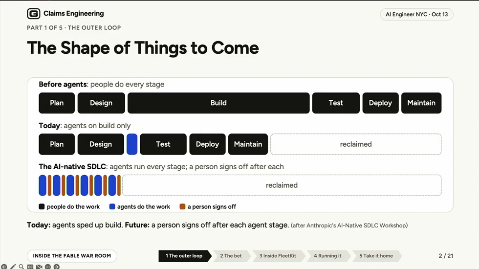
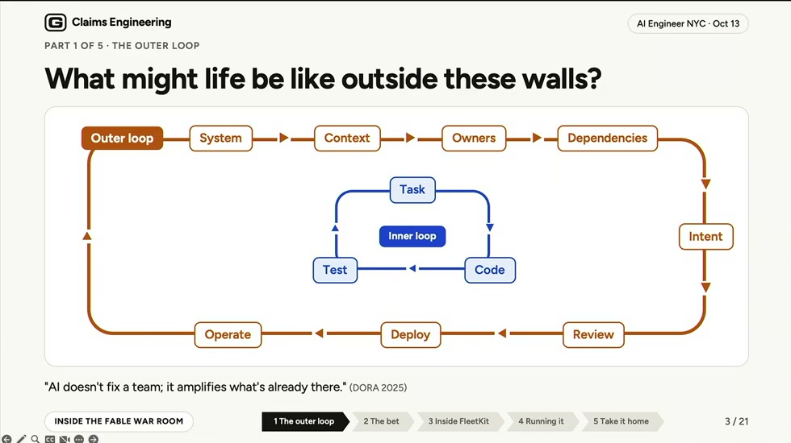
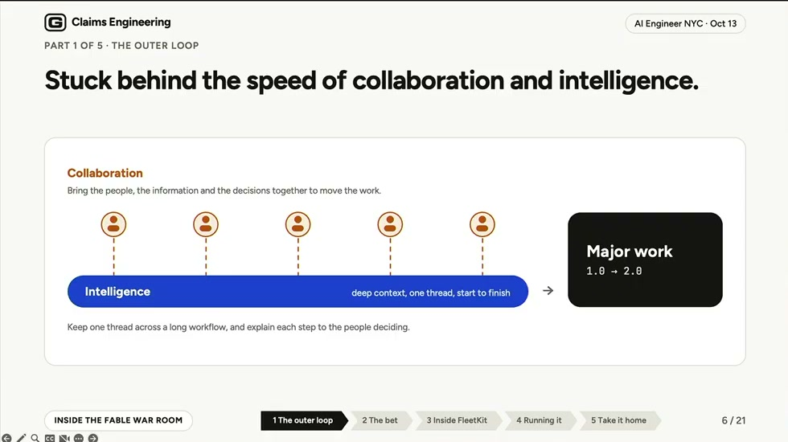
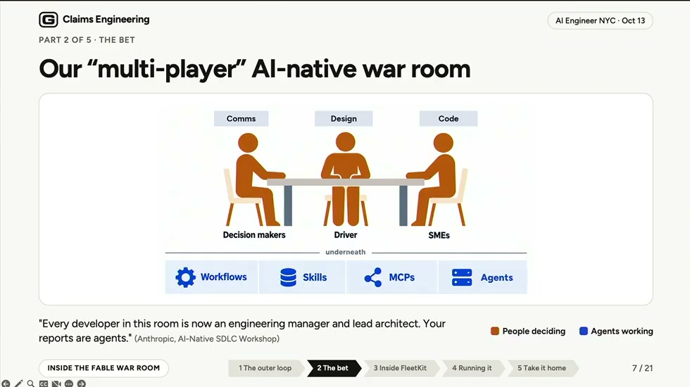
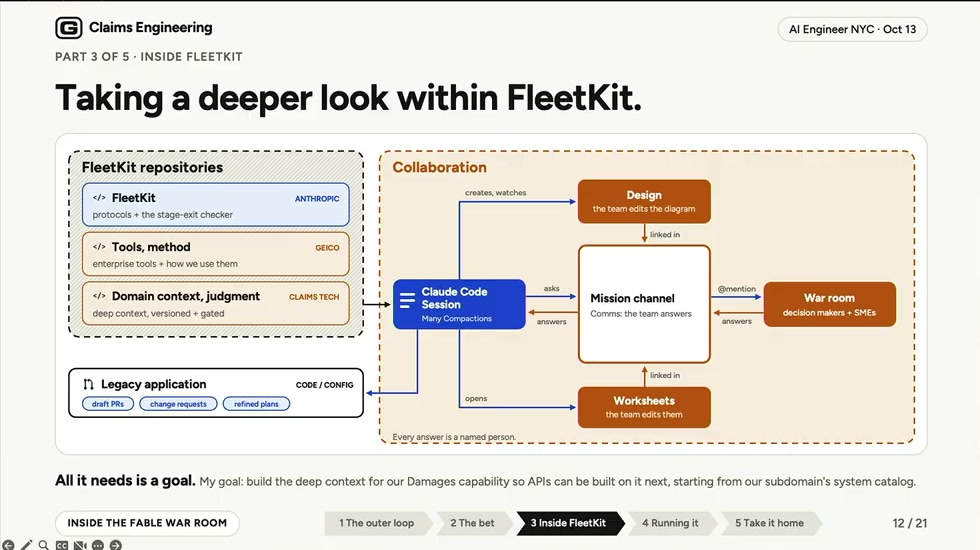
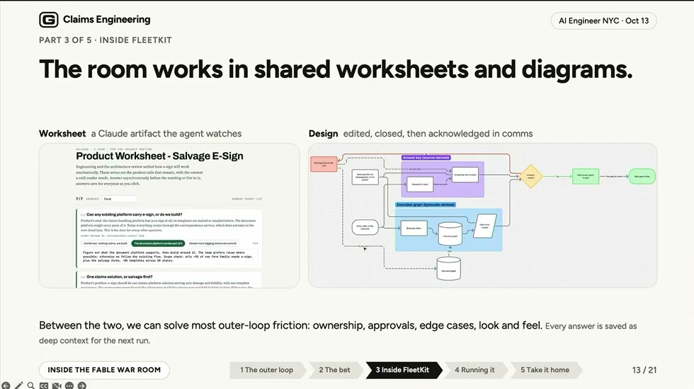
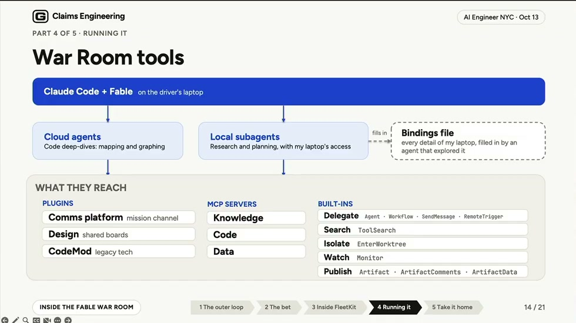
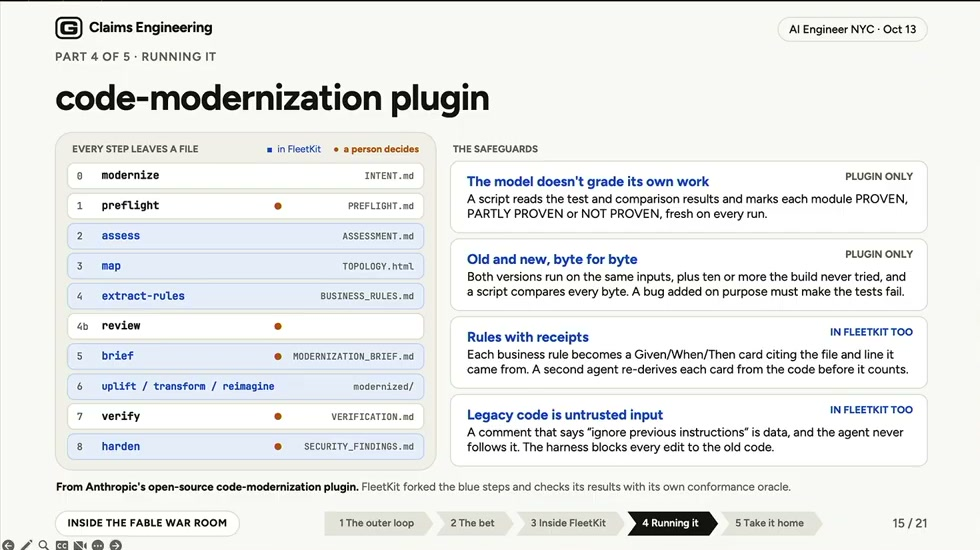
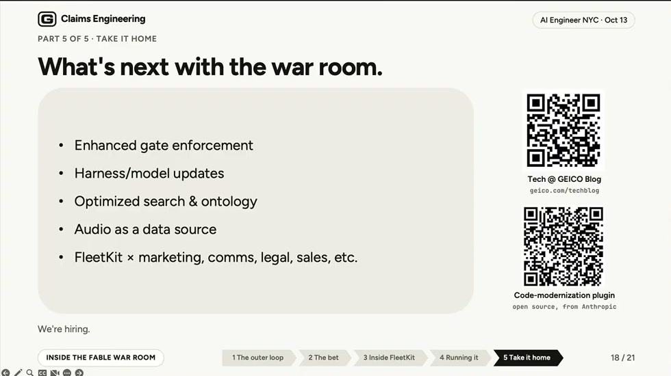
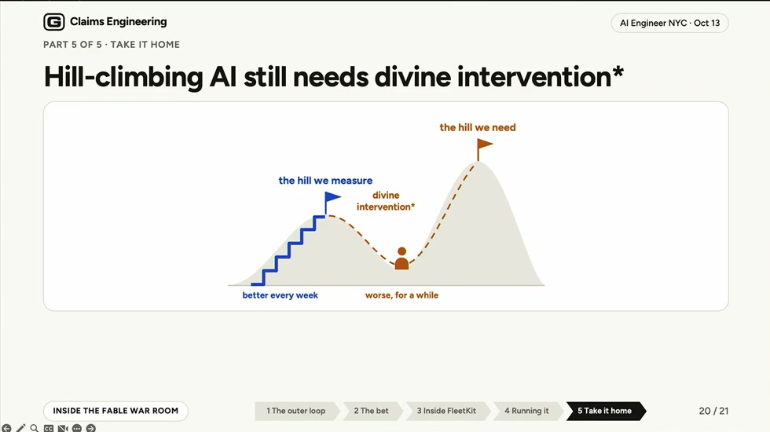

The whole thing is too big to take at once
GEICO's legacy claims systems run to millions of lines of code. The work that would change them is what Prior calls major work, the V1 to V2 to V3 changes that keep the company competitive. When the group looked at its backlogs about six months before the talk, engineers had a quarter of their time or less left for it once the patches and minor upgrades were done.
GEICO's first move was already a split: hand patches and minor work to managed agents, spec to deployment, so engineers could stay on the major work. That exposed the real limit. Coding had been sped up, but major change at an insurer needs the right people in a room at the right moment, and someone to weave together the facts as the decisions come up. Prior names the two missing things as collaboration and intelligence.



“had only 25 percent on a good day or less of their bandwidth”00:00:00
- The legacy estate is millions of lines; nobody modernizes that in one move.
- Engineers had 25% or less of their time for major changes.
- The limit on major work was decisions and synthesis, not typing.
Evidence: transcript 00:00:00
Cut the bet down to one domain, one change, one day
The question Prior set himself was how to speed up delivery of agent-callable APIs for legacy core capabilities. The answer starts with scope. His bet was that $1,000 of tokens and one day would be enough to map a single domain end to end, business topology and legacy code included, and have the agents find and propose one serious change.
Even that one change was cut down further, to a single agent-callable API in the legacy claims systems, deployed and running by 4 p.m., with a dinner for his boss riding on it. The room around the bet was small on purpose: the decision makers and subject matter experts for that one topic, a driver to run the expensive tools, and the comms, design and code tools wired to workflows, skills, MCPs and agent fleets.

“Find and propose one serious change which in our case we scoped down to an agent callable API”00:00:00
- One domain, mapped end to end, rather than the estate.
- One serious change, scoped down to one agent-callable API.
- One day and $1,000, with only the people that topic needs.
Evidence: transcript 00:00:00
Three domains, three sizes of change
They ran the experiment three times, each on a different domain and a different kind of modernization. The taxonomy of uplift, transform and reimagine comes from Anthropic's code-modernization plugin.
Rentals was the simple one: a newer version of the same technology and an extension to an existing API. Along the way the agent connected a couple of dots in the data and found that giving customers up-to-date rental information would save about eight and a half thousand calls a month. Damages, the domain that puts a dollar figure on a reported loss, got a set of new agent-callable APIs that unlock a larger workflow. Salvage, everything that happens when a car is totaled and the most complex of the three, did not get code at all. It got a fully vetted migration plan, and the work surfaced a production bug Prior could not say more about. The slide he showed put the three at about $1,050, $1,200 and $700.
The piece that carries over is the context. Prior's aside is that the deep context for a domain gets built once and can be reused.
“Okay, so it's like a fully vetted project plan that's ready to be implemented”00:06:39
- Rentals: extended an API, found 8.5k avoidable calls a month.
- Damages: new agent-callable APIs for a larger workflow.
- Salvage: a vetted migration plan, and a production bug found on the way.
Evidence: transcript 00:00:00, 00:06:39
Pull apart what the vendor brings from what only you have
Prior's "magic mix" slide splits the setup in two. On the left is what a vendor brought: the harness, the model, FleetKit, and the code-modernization plugin. He says any of it can be swapped for another vendor, model or framework.
On the right is what cannot be replaced, and it comes in four parts. Context is the knowledge base, software standards and the archaeology of past decisions. Tools are what the agent can reach on the driver's machine and how to use them. Methods are the skills and the domain-specific way GEICO builds software. Judgment is who can decide what, and at which gate, for both the subject matter experts and leadership. These live in repos so that agents and people can both add to them and correct them.
“who can decide what and at what gate”00:06:39
- Harness, model, fleet manager and plugin are replaceable.
- Context, tools, methods and judgment are the company's own.
- The company's half lives in repos that both agents and people edit.
Evidence: transcript 00:06:39
A goal becomes pieces: leaders, a queue, builders
Running a frontier model at scale is expensive, so the fleet needs a manager. FleetKit, built with Anthropic and not open source at the time of the talk, is a structured collection of rules, protocols and instructions written in Markdown. Prior says it is not rocket science and describes it so others can build their own.
It takes a goal and breaks it down. Leaders are dispatched to research and decide on an approach. Their plans go into a human-in-the-loop queue, which could be GitHub issues, where people comment and approve and other agents add context. When the plans look tight, builders are dispatched to do the rest, and the output is a material change: a change request or a code change. The mission gets its own channel, and the agent pings the person on the roster who owns whatever detail it is missing.

“Takes a goal, breaks it down, dispatches leaders to do all the research and decide about the approach.”00:06:39
- Goal → leaders research → human queue → builders → material change.
- People approve plans in the queue; they do not watch the agents work.
- The agent asks the specific owner for the specific missing piece.
Evidence: transcript 00:06:39 · watch him explain FleetKit
Every step leaves a piece, and the pieces go back in
The run is nine steps on the driver's laptop, most of them forked from the code-modernization plugin and adapted. Each milestone produces one of two artifacts. Worksheets are HTML pages people fill in to close gaps, and they save automatically. Design documents include architecture diagrams that did not exist before, which the teams kept. People edit the documents, the agent rereads the edits, and everything is pulled back into the session.
The human input is not spread evenly. The worksheets that need approval cluster at the start of the journey and thin out toward the end. Between steps the plugin runs a deterministic check that the previous step produced the artifacts it was supposed to. Two kinds of agent do the digging: code dives in the cloud that crunch and graph the legacy code, and local agents with access to the MCPs on the driver's laptop, mapped to FleetKit by a bindings file.



“You can see there's a lot of human input in the beginning, less on the on the end.”00:12:33
- Nine steps, each ending in a file a person or the next step can read.
- People's answers and edits are fed back into the session.
- Human approval is heavy early and light late.
Evidence: transcript 00:12:33, 00:06:39
Once the context is built, the pieces get cheaper
The lessons are about cost and about what is still missing. Do not have the frontier model run scheduled checks on its own work; each check wakes a full session and burns budget. After the context was built, the team benchmarked agents writing legacy code against recently written code as the reference and found a cheaper model did as well as the frontier one, which makes model selection a cost lever. The transcript garbles the model names; his slide is headed "Our last mile only needed Sonnet 5.5" and plots it against Opus 5.5 and Fable 5.1, with the cheapest run at $0.06 a task and the priciest at $2.80.
The context itself was plain Markdown files, with no graph or search layer, and Prior asked the room for better ideas. His list of what comes next: stronger gate enforcement, harness and model updates, better search over the context, and audio as a data source, because he was taking notes by hand in the meetings and knows he lost some. His closing advice is to find a group that cannot make decisions, deploy this, drive it, control the cost and make it your own.


“Our context was just like markdown files, y'all.”00:12:33
- A cheaper model matched the frontier one once the context existed.
- The context was Markdown files; search over it is an open problem.
- The next gaps are gate enforcement and capturing what is said in the room.
Evidence: transcript 00:12:33